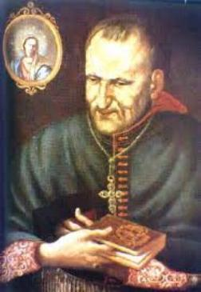
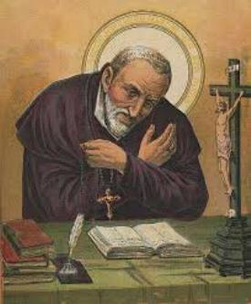

Ele quis caminhar, mas n�o pode,
encostou-se � parede do pr�dio e as l�grimas desceram caudalosas por suas faces.
Era o definitivo chamado Divino. Ele quer falar, quer gritar, mas est� oprimido
pela d�vida e a incerteza.
Ele quis caminhar, mas n�o pode,
encostou-se � parede do pr�dio e as l�grimas desceram caudalosas por suas faces.
Era o definitivo chamado Divino. Ele quer falar, quer gritar, mas est� oprimido
pela d�vida e a incerteza.HOMEM DE CAR�TER
�LTIMO PROCESSO
J� fazia dez anos que Afonso advogava e at� ent�o, nunca tinha perdido uma causa. Tornou-se c�lebre e considerado invenc�vel.
Em 1723 aconteceu um rumoroso processo nos tribunais do reino de N�poles. De um lado estava o Gr�o-Duque de Toscana, e do outro lado o poderoso Duque Orsini. A propriedade que estava envolvida nesta causa era de valor astron�mico. E por isso, a expectativa era muito grande.
Afonso foi convidado a defender os direitos do Duque Orsini. Durante meses leu o processo e se preparou diligentemente, a fim de conhecer todas as min�cias do mesmo. Ningu�m duvidava que ele fosse o vitorioso.
No dia do julgamento, como sempre, Afonso fez a defesa da sua causa de modo sereno, seguro e imperturb�vel. Quando terminou o audit�rio extasiado de admira��o se levantou e o aplaudiu estrondosamente.
Em meio aos aplausos, o advogado do advers�rio se aproximou de Afonso e pediu para falar. Baixou um grande sil�ncio na sala do j�ri. E ent�o, ele abrindo sua pasta, retirou um documento de duas p�ginas, mostrou a Afonso e perguntou?
- �Leste este documento?�
Afonso correu os olhos sobre aquelas folhas e gelou, porque desconhecia que existia aquele compromisso do Duque Orsini com o Gr�o-Duque de Toscana. Percebeu sua distra��o e respondeu:
- �Tens raz�o, eu me enganei. Fui derrotado!�
Rompendo aquele aglomerado de amigos, parentes e clientes que o rodeavam, n�o falou nada e n�o quis ouvir ningu�m, deixou rapidamente o Tribunal, e descendo a escada, disse:
- �� mundo, agora te conhe�o!... Tribunais n�o me ver�o jamais!�
O grande �dolo caiu do seu pedestal! Rodeado de seus admiradores, � humilhantemente derrubado da sua tribuna e cai fragorosamente. Sabe que h� injusti�a e corrup��o em tudo aquilo, por isso ficou enojado. Foge da humanidade e foge de tudo, quer estar s�, sem falar, sem comer e sem beber. E assim permaneceu durante tr�s dias, sem atender os pr�prios pais.
SURGE O HOMEM DE DEUS
Aos poucos Afonso vai se recuperando... O seu orgulho ferido gradativamente vai se transformando em humildade. Sua f� e suas ora��es ganham mais for�a, ocupam um maior espa�o no seu cora��o e lhe ensejam perceber que em tudo aquilo estava a Vontade Magn�nima de DEUS. Ele sente que o SENHOR o quer para SI, porque tem uma miss�o para ele. Afonso ret�m o pensamento, ajoelha-se no ch�o do seu quarto, e olhando o C�u pela janela, pergunta:
- �SENHOR, que queres que eu fa�a?�
Ent�o, decididamente se afastou da sua profiss�o, n�o defendeu mais ningu�m e n�o pegou nenhuma causa. Seu fervor religioso retornou ao seu cora��o. Passava longas horas diante do sacr�rio num carinhoso e tranquilo di�logo, que somente DEUS o ouvia.
Sa�a do sacr�rio e ia procurar os pobres e necessitados em qualquer parte dos Bairros, e conversando com eles buscava solu��es para os seus problemas e dificuldades.
Visitando o Hospital, p�s-se a lavar as feridas daqueles pobres chagados e a lhes fazer os curativos. A uns levava uma palavra de carinho e afeto, a outros um sorriso, um abra�o ou um caloroso aperto de m�o, para reanim�-los, infundindo-lhes coragem e paci�ncia para vencer os inc�modos da doen�a e do mal que os atormentava.
E no meio desta piedosa atividade, ele ouviu nitidamente uma voz que suavemente murmurou no interior da sua mente: �Afonso, abandona o mundo... Entrega-te a MIM...�
Aquela voz o deixou impressionado... E a voz lhe falou outra vez! Ele ficou est�tico em d�vida diante daquele mist�rio... Ser� que realmente eu ouvi aquela voz? Ele quer continuar dando atendimento aos doentes do Hospital, mas se sente perturbado, e quando se retira dali se sentiu cercado por uma luz e aquela voz se fez ouvir mais uma vez, agora mais pausada e mais clara: �Afonso, abandona o mundo... Entrega-te a MIM!�
Ele quis caminhar, mas n�o pode,
encostou-se � parede do pr�dio e as l�grimas desceram caudalosas por suas faces.
Era o definitivo chamado Divino. Ele quer falar, quer gritar, mas est� oprimido
pela d�vida e a incerteza.
Saiu rapidamente dali e procurou uma Igreja e se refugiou na Igreja de NOSSA SENHORA DAS M�RCES. Lan�ou-se aos p�s da imagem da VIRGEM MARIA, e de novo, de modo bem n�tido, ouviu a Voz de DEUS encher o seu cora��o: �Afonso, abandona o mundo... Entrega-te a MIM�.
� justamente neste momento que ele decidiu e renovou o seu prop�sito de deixar tudo e se consagrar inteiramente a DEUS. Levantou-se, retirou a espada da bainha, e como garantia da sua fidelidade, colocou-a sobre o Altar de NOSSA SENHORA, e faz a sua entrega consciente e cheia de amor: �SENHOR, eis-me aqui... Fazei de mim o que quereis�.
Ao sair da Igreja procurou o Padre Pagano que era seu amigo, e lhe contou tudo, manifestando-lhe a sua decis�o de deixar o mundo imediatamente. O Padre tentou acalm�-lo e inclusive ponderou a necessidade de pensar um pouco mais no assunto, com o objetivo de amadurecer concretamente a decis�o.
O conselho do Padre Pagano foi bom porque Afonso tinha que enfrentar as id�ias e a severa opini�o do seu pai, e este fato, ele sabia de antem�o, que n�o seria tarefa f�cil.
CONVERSANDO COM O PAI
Assim, chegando a casa, Afonso iniciou logo a sua investida. Procurou o pai para conversar sobre a mudan�a do seu projeto de vida. O senhor Giuseppe at� parece que adivinhou, quando percebeu que o filho tinha chegado, rumou para o quarto dele. O di�logo foi franco, rude e violento. As palavras saiam da boca do pai numa triste apela��o: �Tu est� abandonando o teu pai... Est�s jogando fora uma fortuna constru�da com muita luta... Est�s voltando �s costas para uma carreira que era a honra da tua fam�lia... Onde vai parar o bom nome dos Lig�rio?�
Quando o senhor Giuseppe terminou suas palavras, Afonso com o cora��o premido pela dor causada pelas express�es do pai, falou brevemente real�ando a verdade da sua decis�o: �Papai, n�o posso ir contra DEUS... N�o posso...�
Giuseppe abandonou o quarto como se fosse uma fera: �Que morra um de n�s dois... N�o quero ver-te mais�.
Gritos n�o resolvem situa��es. Por isso mesmo, Afonso deixou passar a tempestade para conversar com o seu pai mais tarde e lhe dizer as palavras certas. �Papai, sei que o senhor est� triste por minha causa. Mas � necess�rio que a verdade seja completamente conhecida. N�o perten�o mais ao mundo. DEUS quer que me retire dele... N�o me leve a mal... Papai me d� a sua b�n��o�.
Giuseppe n�o falou mais nada, mas tamb�m n�o se mostrou de acordo com a decis�o do filho. E por isso, foi buscar ajuda com amigos influentes, a fim de tentar convencer ou barrar as pretens�es do seu filho. Procurou gente importante, at� Padres e Bispos. N�o adiantou nada: Afonso ouviu em sil�ncio as pondera��es e argumentos de todos, e deu a mesma resposta a todos eles: �DEUS me chama... N�o posso resistir ao SENHOR�.
O pai, muito desapontado resolveu abandonar o campo de luta e aceitar a escolha do filho, mas estabeleceu uma condi��o: �Afonso n�o deve ir para o Mosteiro, mas continuar� morando na casa dos pais�. O filho aceitou a condi��o para contemporizar a situa��o.
SACERDOTE DO ALT�SSIMO
E assim, Afonso
se dedicou integralmente e com entusiasmo, ao cultivo da religi�o. Em 27 de Outubro
de 1723, tornou-se Cl�rigo, trocando as luxuosas 
No dia 6 de Abril de 1726 recebeu a Ordem Diaconal. Sua alegria � contagiante, pois j� podia anunciar a palavra de DEUS, que logo come�ou a proclamar com muito empenho e amor, transmitindo os ensinamentos e as recomenda��es Divinas. E sempre preocupado com a convers�o dos pecadores, exagerou no exerc�cio das penit�ncias. Ficou gravemente enfermo. Chegou a receber a un��o dos enfermos. Seu leito estava sempre cercado de pessoas que rezavam e suplicavam a DEUS para que ele tivesse uma boa morte. Sua m�e chorava desesperadamente e seu pai, cheio de remorso, por ter desejado a morte do filho, permanecia contrito em ora��es, pedindo a sa�de e a vida para ele. Quando tudo parecia estar chegando ao final, Afonso pediu que trouxessem para junto do seu leito a imagem de NOSSA SENHORA DAS MERC�S, aquela mesma � qual ele tinha entregado a sua espada. Olhou-a com carinho e devo��o, dando a impress�o de que conversava com Ela. De repente ergueu-se e se assentou na cama. O espanto e as exclama��es de alegria foram de todos. Afonso estava completamente curado. A VIRGEM MARIA intercedeu junto a DEUS e conseguiu do SENHOR o milagre que lhe restituiu integralmente a sa�de.
Sem d�vida, aquela doen�a foi um tempo de parada na correria do cotidiano. Isto porque, ao longo das muitas atividades de cada dia, ele primordialmente se preparava com fervor para a sua ordena��o sacerdotal. Ent�o foi um tempo de medita��o e organiza��o interior, que atingiu um cl�max no dia 21 de Dezembro de 1726, quando entre risos e muito j�bilo ele se tornou o Padre Afonso Maria coroando de pleno �xito o ideal da sua vida.
A PRA�A LEVINARO
Embora sua fama de orador j� come�asse a se espalhar por toda parte, desde o tempo de Di�cono, a preocupa��o maior do neo-sacerdote era os pobres e desamparados, que na verdade, foram � paix�o da sua vida.
Havia em N�poles uma Pra�a denominada de Levinaro onde se reunia os pobres, os malandros e os vagabundos da cidade. Ou ficavam ali com seus v�cios, sem fazer nada, ou se espalhavam pelos Bairros para roubar. O apelido deles era �lazzaroni�. Ningu�m queria se aproximar daquela gente. Padre Afonso Maria aceitou o desafio. � homem que enfrenta os riscos, porque � homem de f�, de ora��o e de esperan�a. E este trabalho ele escolheu como a sua principal miss�o: converter aqueles pobres rejeitados pela sociedade.
Com sua batina sacerdotal entrou na Pra�a caminhando lentamente, mas ningu�m se aproximou. Ele ent�o, se assentou num banco de madeira e ficou lendo uma pequena B�blia. Aos poucos alguns foram se aproximando. Conversam, pedem explica��es, o assunto � cativante. No dia seguinte tem mais pessoas e no terceiro dia ainda tem mais gente. Passam horas ao redor do Padre Afonso Maria, s�rios, olhando para ele, fazendo perguntas e ouvindo os seus ensinamentos. Ningu�m sabe o nome dele. � simplesmente conhecido como o Padre. E Afonso os trata com carinho e respeito, e essa atitude os comove, sente-se bem em estar ali e ouvir os ensinamentos e as orienta��es do Padre.
Quando Padre Afonso come�ou anunciar o amoroso e misericordioso JESUS DE NAZAR�, amigo dos pobres e dos pecadores, as convers�es come�aram a surgir de maneira not�vel. Muitos deles quiseram se preparar para receber a Sagrada Eucaristia! Era o primeiro fruto admir�vel da preciosa obra do Padre Afonso Maria.
Por outro lado, a Pra�a Levinaro perdeu a sua antiga e terr�vel fama, agora j� � uma Pra�a onde as fam�lias podiam frequentar e passear a sombra das �rvores.
APOSTOLO DOS POBRES

E com essas pessoas convertidas, Padre Afonso formou verdadeiras Comunidades Crist�s, com reuni�es e catequese para aprofundamento dos ensinamentos, deixando todos eles entusiasmados e felizes com a iniciativa. Fundou as �Capelas da Tarde�, tamb�m denominadas de "Capelas Noturnas" , para jovens mendigos e marginalizados, que eram centros dirigidos pelos pr�prios jovens e que as utilizavam para ora��es, proclama��o da Palavra de DEUS, atividades sociais, educa��o, e vida comunit�ria.
Quando ele morreu, havia 72 dessas �Capelas� com mais de 10.000 participantes.
A POL�CIA FICOU ACESA
Todavia como se tratava de gente marcada pela sociedade, considerados como malandros e bandidos, a pol�cia ficou logo de olho, desconfiando daquelas reuni�es.
Mas as convers�es aconteciam de maneira inquestion�vel, como por exemplo, o caso de Nardone, que era um diretor de escola corruptor de menores, e tamb�m o caso de Barbarese, que vivia como um animal, mau car�ter e cheio de v�cios. Foram convertidos pela Vontade de DEUS e passaram a ajudar decididamente o Padre Afonso Maria no seu admir�vel apostolado.
E por essa raz�o, agora j� aconteciam muitas �reuni�es� e eram formados muitos grupos para palestras, e as autoridades come�aram a ficar desconfiadas e at� com certo receio. Estavam pensando: �O que significa tantos bandidos juntos? Um motim?� A policia decidiu e interferiu no caso, prendendo de uma vez os dois bandidos mais conhecidos: Nardone e Barbarese. Eles se defenderam dizendo que se reuniam para ouvir o �Senhor Lig�rio� . A pol�cia se espantou e soltou os dois imediatamente. O trabalho continuou firme com Afonso a frente do movimento, apesar da vigil�ncia policial, mesmo assim ganhou vulto e faz dele uma atividade precursora da A��o Cat�lica.
OUTROS PADRES V�M AJUDAR
O senhor Arcebispo de N�poles vendo os frutos espirituais daquela obra, escolheu alguns Padres e os destinou para serem auxiliares da Obra, no que fosse necess�rio. Agora, a obra do Padre Afonso Maria j� tem assistentes Diocesanos nos diversos Grupos ou Centros de Ora��es. E o projeto continua crescendo, com a cria��o de escolas gratuitas para os pobres de corpo e de esp�rito.
Mais tarde, em virtude de dores no cora��o e problemas de sa�de, Padre Afonso Maria teve de deixar a dire��o do movimento, mas a obra n�o morreu... Seguiu firme e sempre em frente, cada dia concretizando o seu projeto.